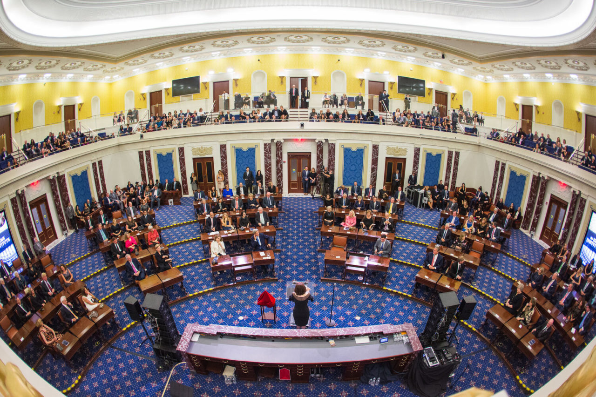

First Convened
The Senate began meeting under the new Constitution.
A Guide to American Government
The Upper Chamber
The United States Senate is one of the two chambers of Congress, alongside the House of Representatives. Together, the chambers consider and pass federal legislation.
The Senate also reviews many presidential appointments, considers treaties, and conducts trials following federal impeachments. Each state elects two senators, for a total of 100 members.

A Constitutional Institution
First convened in 1789, the Senate was established as part of the new federal government. Its design gives every state equal representation, regardless of population.
The Senate began meeting under the new Constitution.
Two senators represent each of the 50 states.
Senators serve staggered six-year terms.
Who Serves?
Senators are elected by voters across their state. Regular Senate elections take place every two years, with roughly one-third of seats up for election each cycle.
To serve as a senator, a person must be at least 30 years old, have been a U.S. citizen for at least nine years, and be an inhabitant of the state they represent when elected.
WHAT DOES THE SENATE DO?
The Senate shares lawmaking with the House of Representatives, while also exercising distinct constitutional powers over appointments, treaties, and impeachment.
Bills may be introduced in either chamber of Congress. Both the House and Senate must approve the same version of a bill for it to become law. If their versions differ, they can exchange amendments or work through a conference committee.
The president can make certain appointments only with the advice and consent of the Senate. These include Cabinet members, ambassadors, heads of many federal agencies, Supreme Court justices, and other federal judges.
The Constitution says the president may make treaties when two-thirds of the senators present concur. This gives the Senate a formal role in approving treaties negotiated by the executive branch.
The House of Representatives has the power to impeach federal officials; the Senate tries those impeachments. Conviction requires a two-thirds majority of senators present and results in removal from office. The Senate may also vote to disqualify the official from future federal office.
Impeachment is the formal accusation; conviction is decided by the Senate.
A simplified overview of the usual process.
A proposal is introduced in the House or Senate.
Members study, revise, and hold hearings on the bill.
The chamber considers the bill and votes.
The House and Senate pass the same text.
The president signs the bill or vetoes it.
How It Operates
Senate business moves through committee work, floor debate, negotiations, and votes. Rules shape how quickly a proposal can advance.
The Senate meets in the Capitol to consider legislation, nominations, and other business. Committees allow smaller groups of senators to study issues, hold hearings, examine proposals, and recommend action before the full Senate considers them.
Senate debate is governed by rules adopted by the chamber. Senators can speak at length, although unanimous consent agreements negotiated by party leaders often set time limits or organize how a question will be considered.
After debate, the Senate votes on the question before it. In a voice vote, senators respond “Yea” or “Nay.” A recorded vote documents how each senator voted. If a vote is tied, the vice president can cast a tie-breaking vote when present; without that vote, the motion fails.
A filibuster is a tactic that prolongs debate to delay or block Senate action. The Senate can invoke cloture to limit debate. For most legislation, cloture requires three-fifths of the senators duly chosen and sworn—normally 60 of 100 senators.
After cloture, debate may continue for a limited period, generally up to 30 additional hours under Senate rules.
At a Glance
The Senate is designed to represent states equally and to require deliberation. Those same features can protect minority viewpoints, but they can also make it harder for a majority to pass legislation.
Representation is equal across states, not proportional to population.
Three-fifths of a full 100-member Senate is normally 60 votes.
Two-thirds of senators present must concur for treaty approval.
Explore party control across the United States.